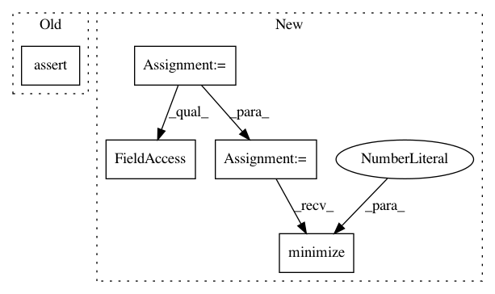

3ae87f9718babe8b7385527b0298ca68b6a75699,testing/test_session.py,TestSessionConfiguration,test_option_persistance,#TestSessionConfiguration#,20
Before Change
settings.session.inter_op_parallelism_threads = dop
settings.session.allow_soft_placement = True
self.m.compile()
self.assertTrue(self.m.session._config.intra_op_parallelism_threads == dop)
self.assertTrue(self.m.session._config.inter_op_parallelism_threads == dop)
self.assertTrue(isinstance(self.m.session._config.inter_op_parallelism_threads, int))
self.assertTrue(self.m.session._config.allow_soft_placement)
self.assertTrue(isinstance(self.m.session._config.allow_soft_placement, bool))
After Change
self.assertTrue(isinstance(m.session._config.inter_op_parallelism_threads, int))
self.assertTrue(m.session._config.allow_soft_placement)
self.assertTrue(isinstance(m.session._config.allow_soft_placement, bool))
opt = gpflow.train.ScipyOptimizer()
opt.minimize(m, maxiter=1)
def test_option_mutability(self):
"""
Test configuration options are passed to tensorflow session
In pattern: SUPERPATTERN
Frequency: 3
Non-data size: 5
Instances
Project Name: GPflow/GPflow
Commit Name: 3ae87f9718babe8b7385527b0298ca68b6a75699
Time: 2017-10-29
Author: art.art.v@gmail.com
File Name: testing/test_session.py
Class Name: TestSessionConfiguration
Method Name: test_option_persistance
Project Name: GPflow/GPflow
Commit Name: 49a385eae93032125a6718433b3ca1753aee3b1e
Time: 2017-11-02
Author: art.art.v@gmail.com
File Name: testing/test_method_equivalence.py
Class Name: TestEquivalence
Method Name: test_all
Project Name: GPflow/GPflow
Commit Name: d6883d26b557cbeeaceba38643bf5b98819fbed3
Time: 2017-09-26
Author: art.art.v@gmail.com
File Name: testing/test_model.py
Class Name: TestOptimize
Method Name: test_adam